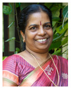
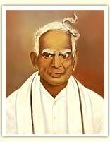
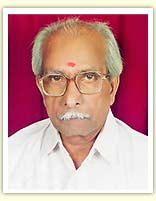

"Born into a family of Ayurvedic Doctors my ambition in life was clear from the beginning: To join the family tradition and to heal with the help of Ayurvedic knowledge".
Dr. Mini Joy has attained a Bachelors Degree in Science (BSc) from the University of Kerala and a medical degree in Ayurveda, namely Bachelor of Ayurvedic Medicine and Surgery (BAMS). The mother of two children has practised Ayurveda for the past 25 years. During the last 5 years she has created her own home-stay for people to be completely cared for while in therapy
Dr. Mini’s family, Vallabhassery, is one of Kerala’s well-known aristocratic Ayurveda families, who gained knowledge of Ayurveda about two centuries ago. They were also respected for their practice of Kerala’s martial arts such as ‘Kalari’ and ‘Kalari marma chikilsa’ (treatment of vital points of the body)
 
Gowrisankara, located in the peaceful and picturesque village of Thanneermukkom, Kerala, is based on pure ayurvedic treatments and ancient medicinal recipes handed down through five generations of renowned Ayurvedic practitioners. The principal practitioner is Dr Mini Joy, and Gowrisankara is her family home. She possesses a Bachelors degree in Science (BSc) from the University of Kerala, as well as a Bachelor of Ayurvedic Medicine and Surgery (BAMS) and to date has 25 years' experience as a traditional healer. Dr. Sadasivan Vallabhassery, Dr. Mini’s father, became very well-known in the Ayurvedic field, especially for his knowledge of natural medicines. For many years he acted as a product quality manager for the medicine manufacturing of Maharishi Mahesh Yogi in Delhi, India.
At Gowri Sankara the production of authentic natural Ayurvedic medicine for the individual treatments is part of the holistic concept. Since grandfather’s times well-known remedies and secret recipes were handed down to sons and daughters, thus the family knowledge of preparation and ingredients has been kept and treasured.